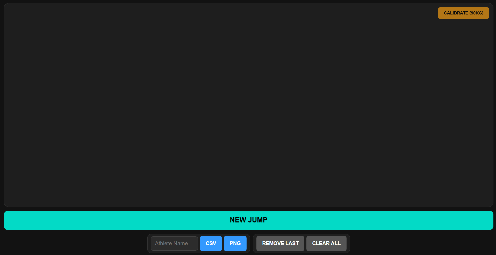

FORCE PLATE
Aalborg Athlete Analysis — lab-grade jump data at 1% of the cost.
Microcontroller · Sensors · Web UI · Python
The Problem
I am a gymnast. I have spent years training for explosiveness to improve performance in tumbling and trampoline like many peers. It is, however, much more difficult to assess progression compared to regular strength training, where load and repetitions are quantifiable. Peak force production, Rate of Force Development (RFD) and Reactive Strength Index (RSI) are arguably more important for athletes in explosive sports than sheer strength. Professional force plate systems do allow athletes to measure the mentioned attributes, but they are expensive and not widely used. The gymnastics clubs, sports boarding schools and functional fitness clubs that could benefit the most from this data seldomly have access to it.
With modern generative AI tools, the gap between "I know what to measure" and "I have working code that measures it" has collapsed. I know biomechanics. I know what the force curve of a good jump looks like. Building the hardware and software to capture and visualize it is now a matter of days, not months.
The Hypothesis
Off-the-shelf load cells and an ESP32 can produce lab-grade force curve data at roughly 1% of the cost of commercial systems. A tablet-accessible web interface means no software installation, no laptop required, and any coach can operate it. The analysis — peak force, time of flight, jump height, RFD — can be computed in the browser and visualized instantly.
The commercial concept Aalborg Athlete Analysis brings the custom developed hardware into action with 8-week programs with knowledge about training and nutrition and measuring progression throughout the program in specifically vertical jumps and sprint.
Iteration Log
V1 — Proof of Concept
The first version was a hacked bathroom scale retrofitted with a HX711 amplifier and an ESP32. The firmware served a minimal web page over WiFi where you could tare the scale, trigger a 5-second recording, and download a raw CSV for later analysis.
The first version was tested on myself and a handful of gymnasts. The physics worked. The data was clean enough to see clear differences between athletes. Main problem was the glass bathroom scale feeling fragile and too small footprint. Also, the users proposed a "traffic light" indicator to prepare for the jump.
V2 — Usable in the Field
The first version was not something you could hand to a coach and walk away from. V2 focused entirely on making it operator-independent.
Major changes:
- LED traffic light sequence: Red (setup) → Yellow (prepare) → Green (recording). The athlete knows exactly when to jump.
- Web-based analysis: The jump analysis algorithm was ported to JavaScript and runs directly in the browser. The operator sees an overlaid force curve plot instantly on the tablet.
- Time-aligned overlays: All jumps are shifted so takeoff occurs at exactly t=1.0s on the plot, enabling direct comparison of acceleration and deceleration profiles across athletes and sessions.
- Robust build: The electronics are mounted to a thick and much wider wooden block.
Technical Build
Hardware Architecture
- Load cells: 4x 50kg Load Cells in Wheatstone bridge with HX711 amplifier
- Microcontroller: ESP32-S3 Zero
- WiFi: Soft AP mode — no router required, tablet connects directly to the plate
- Sampling rate: ~80hz
Embedded Software
The firmware runs a state machine managing calibration, athlete setup, jump recording, and data retrieval. During recording the ESP32 streams timestamped force samples (milliseconds; Newtons) to FFat storage. After recording, the web UI fetches the CSV and renders the analysis client-side.
The CSV format is human-readable and trivial to re-analyse offline in spreadsheets or Python if needed.
Web Interface & Analysis
The tablet UI has four sections: Calibration, Athlete Setup, Record Jump, and Analysis. The analysis panel renders a Canvas-based overlay plot of the recorded jumps, time-aligned to takeoff. Metrics displayed per jump: Peak Force (N), Jump Height (cm), Time of Flight (ms).

Future Direction — Add IMU Sprint Analysis
The next expansion under the Aalborg Athlete Analysis concept is a sprint analysis vest using an MPU6050 IMU at 100Hz with DMP (Digital Motion Processor). Mounted in a retrofitted GoPro-style chest harness, the IMU captures vertical displacement, acceleration curves, and lean angle throughout a sprint.
Time Investment
| Phase | Hours (approx) |
|---|---|
| V1 prototype | 25 |
| V2 iteration | 10 |
| Testing and sourcing for V3 | 5 |
| Total | 40 |
User Validation
15 athletes measured. Key findings:
- Force curve shape is immediately interpretable by athletes and other coaches with no training.
- The LED traffic light sequence was universally understood without explanation.
Lessons Learned
Bringing spare parts to testing is necessary when large forces are at play. One user broke a single leg of the V2 in the first jump because of a crooked landing. Nothing can survive a 1500N blow at an angle, but replacing the part would have been easy if spares were brought.